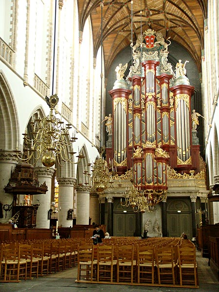
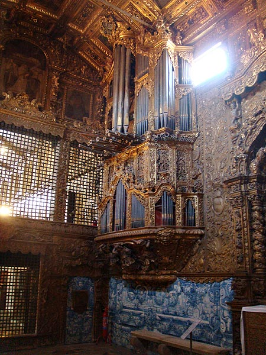

O órgão é o instrumento de teclado mais antigo, cujas descrições de alguns engenheiros greco-romanos remontam sua criação por volta do século 3 a.C. Era chamado de órgão hidráulico e dependia da água, ativada por fontes naturais como uma cachoeira, para produzir e empurrar o ar comprimido para dentro dos tubos.
A partir do século 4 d.C., tal princípio foi substituído pelo pneumático, no qual o fornecimento de ar se dava por meio de foles operados manualmente. Mas foi no século 10 que os órgãos de tubos foram introduzidos nas igrejas ocidentais e passaram a ser construídos tamanhos diversos. É um dos instrumentos musicais que mais impressiona por sua imponência.
Abaixo, tem-se os órgãos de Christian Müller (séc. 18) na Igreja de Saint Bavo em Haarlem - Holanda (Esquerda)
E também um Órgão de tubos (séc. 18) no Convento de Jesus em Aveiro - Portugal (Direita)

